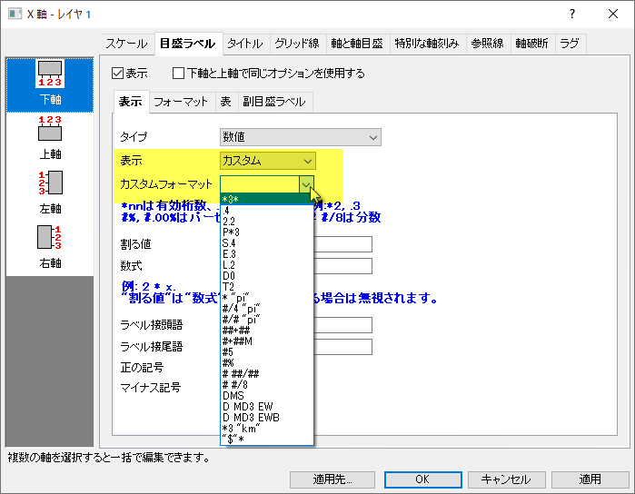

FAQ-123 軸ラベルをパーセントまたは分数、緯度経度で表示するにはどうしたら良いでしょうか?
Display-Percentage-Axis-Label
最終更新日: 2018/12/11
次のようにグラフプロットしたい場合があります：
- 小数点の目盛ラベルをパーセンテージ（10％など）で表示
- 数字の目盛ラベルを3/8などの小数として表示します。
- 緯度と経度の目盛りを度分秒で表示します。例えば、37°20 '33 "
次に、軸目盛ラベルのカスタム表示フォーマットコンボボックスを使用して、.Originフォーマット表記法でカスタム表示フォーマットを定義することができます。
- 
- 目盛り上でダブルクリックして、軸ダイアログを開きます。
- 目盛ラベルタブを開き、この中の表示タブを開きます。
ケース1 : パーセンテージでラベルを表示
Origin2018bから、ワークシートは10進数をパーセンテージとして表示することをサポートしています。（例：10％、20％など） しかし、グラフをプロットした後では、軸の目盛りのラベルは10進数で表示されます。 （例：0.1,0.2）目盛ラベルをパーセンテージで表示するには、上記の表示タブを開いて、
- 表示ドロップダウンリストからカスタム表示を選択します。
- ドロップダウンから選択するか、カスタムフォーマットテキストボックスに＃％を入力します。
- OK ボタンをクリックします。
| パーセンテージ形式をサポートしていないOrigin 2018およびそれ以前のバージョンでは、以下の手順に従って、目盛ラベルをパーセンテージとして表示できます。
- 目盛り上でダブルクリックして、軸ダイアログを開きます。
- 目盛ラベルタブを開き、この中の表示タブを開きます。
- ～で割るのテキストボックスに1/100を入力します。
- ラベル接尾語のテキストボックスに％を入力します。
- OK ボタンをクリックします。
|
ケース2 : 分数でラベルを表示
Origin 2018b以降のバージョンでは、Originは数値の目盛りラベルを端数として表示し、上のDisplayタブを開いて
- 表示ドロップダウンリストからカスタム表示を選択します。
- ドロップダウンから＃## / ##または＃＃/ 8を選択するか、カスタムフォーマットテキストボックスに独自のカスタムフォーマット記法を入力します。
- OK ボタンをクリックします。
ケース3 : 緯度経度でラベルを表示
Origin 2018b以降のバージョンでは、緯度と経度の目盛りラベルを度分秒での表示をサポートしています。上記の 表示 タブで、
- 表示ドロップダウンリストからカスタム表示を選択します。
- ドロップダウンから DMSなどの直接表記を選択するか、カスタムフォーマットテキストボックスに独自のカスタムフォーマット表記を入力します。
- OK ボタンをクリックします。
キーワード:%、軸、プロット、ラベル、スケール、接頭語、接尾語、分数、緯度軽度、度分秒、DMS, DD-MM-SS
必要なOriginのバージョン: Origin 2018b以降